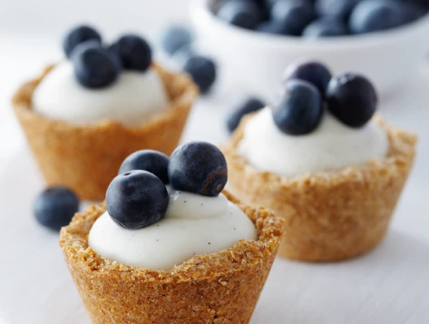
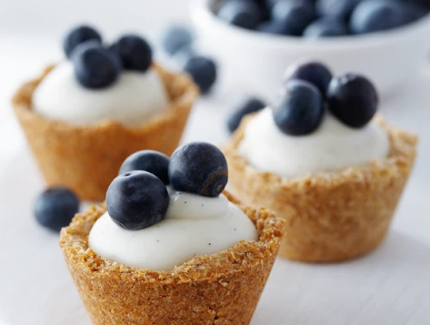

Hello everyone, I am Tan Jack Ann, a pastry chef with years of baking experience and a passion for innovation. I love collaborating with teams to craft amazing baked goods. Hoping to be hired by companies to showcase my skills and creativity, delivering delicious experiences to customers.
"Baking Beginnings: A Pastry Chef's Creative Journey"
My day starts with preparation, crafting flawless dough with melting butter and mingling flour, creating tantalizing aromas.
"Baking Journey: The Artistry of the Pastry Chef"
Carefully placing doughs in the oven, seeing cakes expand and turn golden, satisfying customers' taste buds.
"Sweet Struggle: The Challenging Journey of a Pastry Chef"
Overcoming challenges like unstable oven temperatures, perfecting dough, and decorations, fueling growth and professionalism.


 
